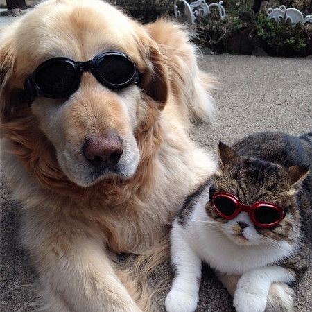

Bienvenido a nuestro sitio de adopción "HUELLITAS"
Nuestra misión es dar una segunda oportunidad a perros y gatos que han sido rescatados del abandono, el maltrato o la calle. Creemos que cada vida importa y trabajamos día a día para brindarles un refugio seguro, atención médica, alimentación y mucho cariño mientras esperan a ser adoptados..
¡Anímate a conocer a quienes te esperan con un corazón lleno de amor!
Este sitio está diseñado para que puedas conocer a tu futura mascota, informarte sobre el proceso de adopción ¡Ayúdanos a darles una segunda oportunidad a cientos de animales sin hogar!
